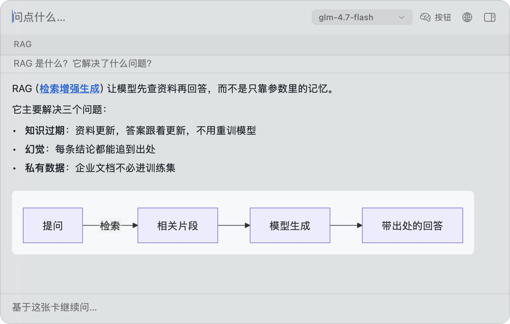
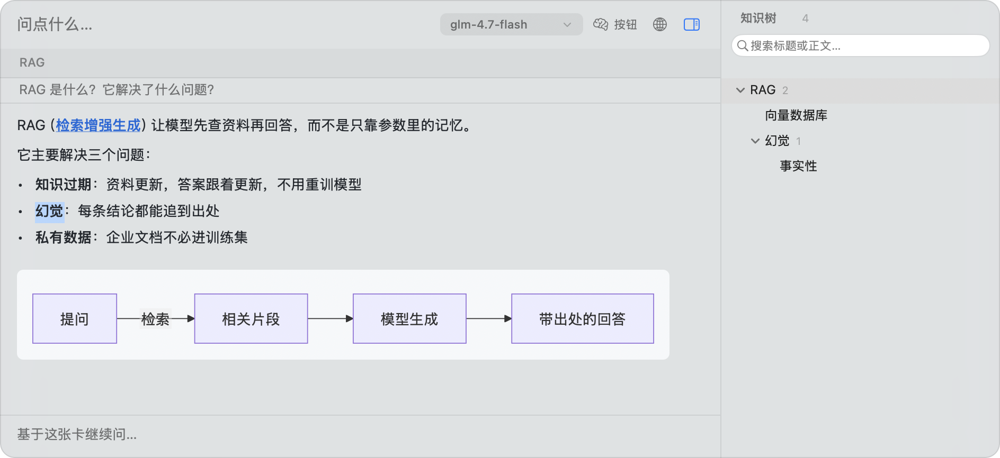
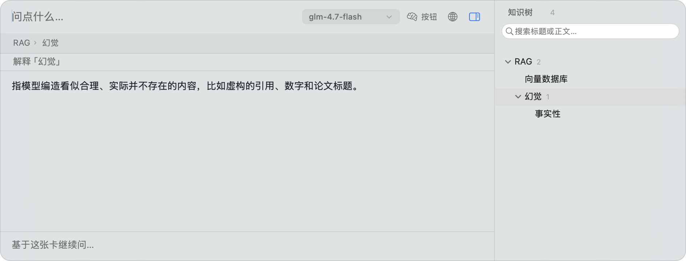
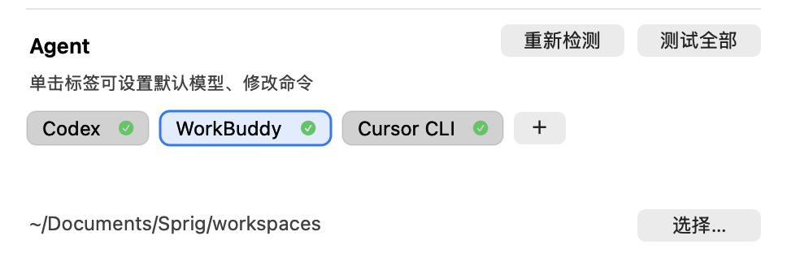

Markdown 与图表
标题、列表、引用、表格按排版画；mermaid 流程图和时序图直接成图；sprig-chart 用 JSON 画柱状图和折线图。
macOS 14+ · 菜单栏常驻 · MIT
常驻菜单栏。按 ⌥Space 问一句，答案就在面板里流出来；看到不认识的词，选中就能追问。
已下载 11 次 （官网 0 · GitHub 11） · 历史版本

01 — 提问
边生成边显示，不用等整段跑完。标题、列表、表格按 Markdown 排版，代码按语言着色， mermaid 流程图直接画成图——不是把一堆符号糊在屏幕上。
02 — 追问
选中答案里任何一个词 → 解释，立刻长出一张子卡，挂在原卡下面。
不用复制、不用开新窗口、不用重述上下文——面包屑直接变成 RAG › 幻觉。
答案里带下划线的术语，单击也能展开。

真实界面：选中「幻觉」，浮出动作条
03 — 知枝
每张卡都记得自己在哪个上下文里诞生。追问时只带相关的祖先节点，不会把整段对话塞进上下文。 所以它记得住你三天前问过什么，而不用你重新交代一遍。

右边那棵树，是这次对话自己长出来的
交互 · 知识树
这是示例里那棵树的真实结构。点任意一个节点，看它下面长出什么，右边会显示那张卡的内容。
虚线是还没长出来的枝 —— 点「幻觉」或「向量数据库」试试
接入
设置页会自动列出本机检测到的 CLI，用你已有的订阅额度——不用另外买 API Key。 不想用云端模型时，就把问题交给它：读文件、跑命令都由 agent 自己决定。

真实设置页：装、卸 agent 之后点「重新检测」，不用重开设置
数据
卡片、知识树、Markdown 全在你自己的目录里。模型调用直连你配置的服务商， 中间没有我们的服务器——也就没有一份「你的提问」躺在别人的数据库里。
~/Library/Application Support/Sprig/repository
直连 · 没有中间服务器
不做代码签名，也不做后台数据上报。API Key 只存在本机偏好设置里。
原生
全原生 AppKit。没有 WebView 那一层，也没有 Electron 那一层。
常驻内存不到 120 MB。选词只发生在自己的输入框里，不做全局划词——所以它不需要那些权限。
还有这些
标题、列表、引用、表格按排版画；mermaid 流程图和时序图直接成图；sprig-chart 用 JSON 画柱状图和折线图。
GitHub、Newsprint、Solarized、Catppuccin、Dracula、Nord、Gruvbox、Rosé Pine、Tokyo Night……每套带明暗两版，跟随系统切换。
接 Tavily 或 DeepSeek。只有涉及时事、价格、最新版本号时才搜——问「什么是设计模式」它不会硬塞一堆营销文给你。
子卡按层级写进同一个 Markdown 文件，落在知识库目录里。能用 Obsidian 打开，也能直接 git commit。
开始
拿最新的 .zip，解压后把 Sprig.app 拖进「应用程序」。
首次启动 macOS 会说「无法验证开发者」。去系统设置 → 隐私与安全性 → 点「仍要打开」。应用没做代码签名，这一步绕不过。
本机 agent、免费 GLM、自定义 API Key、本地 Ollama——四条路任选一条。
之后按 ⌥Space 唤起，输入问题，回车。
关掉弹窗，再去系统设置 → 隐私与安全性 → 拉到底，点「仍要打开」，输密码或触控 ID。介意的话可以自己编译：./scripts/make-app.sh。
系统设置 → 菜单栏 → 拉到底「允许在菜单栏中显示」，确认知枝是开着的。刘海屏机型图标多的时候会被挤掉。
免费额度用完了。等一分钟，或者换成付费接入——DeepSeek 充 10 元能用几个月。
可以放，但首次会要授权，换 app 版本后会再问一次。设置页会把这类路径标成橙色「受系统保护」。
44 秒 · 无旁白